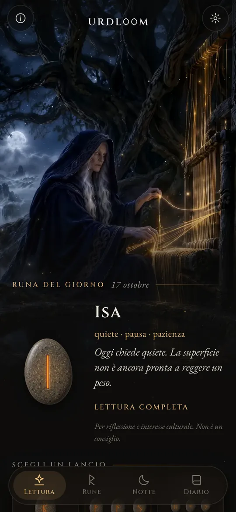
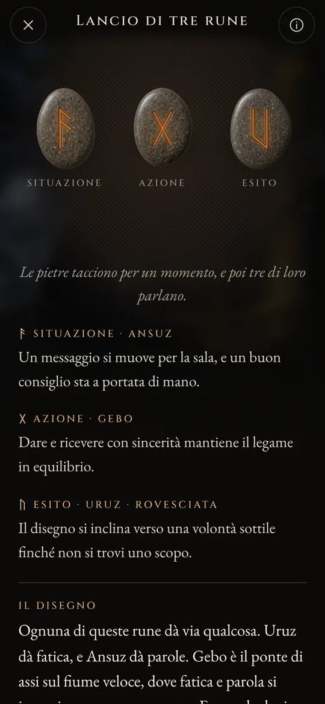
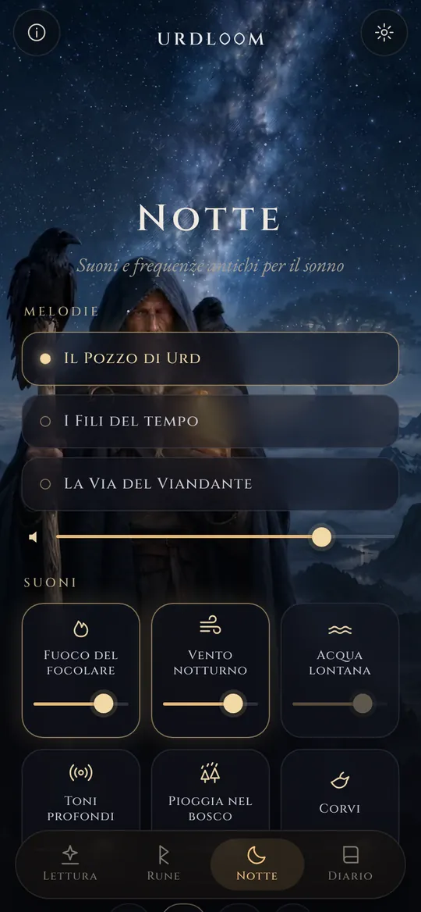
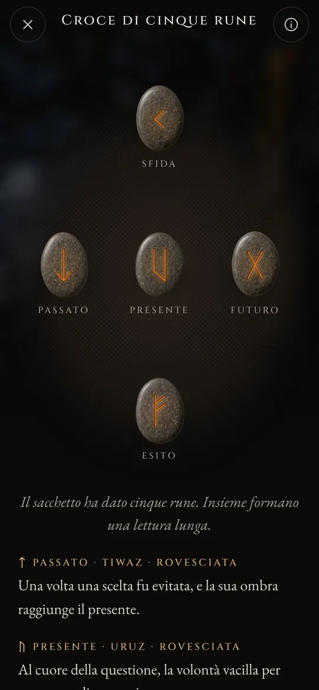

Tre donne siedono presso un pozzo
Negli antichi poemi norreni, tre Norne siedono presso un pozzo sotto Yggdrasil, l’albero del mondo. Ne bagnano le radici, incidono bastoncini e stabiliscono la vita di tutti coloro che nascono. La più anziana è Urd. Il suo nome significa ciò che è stato, e il pozzo porta il suo nome.
Urdloom prende il nome da lei e dal telaio su cui, si diceva, veniva tessuto il destino. L’app ne conserva l’atmosfera: un sacchetto di pietre nella tua mano, un telo sul pavimento e letture scritte con la voce delle saghe, non con quella di un oroscopo.

Di là vengono fanciulle, di molto sapere, tre, dal lago che sta sotto l’albero.Völuspá, strofa 20
Tieni, scuoti, lascia andare
Tieni il sacchetto e le pietre tintinnano nella tua mano. Lascialo andare e volano sul telo, rotolano, si fermano e si girano una alla volta. Sotto di loro compare la lettura.

Runa singola
Una sola pietra per il giorno che ti aspetta, o per una domanda a cui si risponde con sì o no. Basta un tocco e la pietra è lanciata.


Lancio di tre rune
Situazione, azione, esito. Si leggono da sinistra a destra come una breve saga, poi insieme: un ultimo filo mostra come le tre si parlano.

Croce di cinque rune
Passato, presente e futuro lungo la linea centrale, la sfida in alto e l’esito in basso, e tu nel cuore di tutto.




Ogni lettura è stata scritta a mano: le ventiquattro rune, ogni coppia e tutte le 2.024 combinazioni di tre, in ciascuna delle ventidue lingue. Niente viene generato mentre aspetti.

Le ventiquattro rune
L’Elder Futhark è il più antico alfabeto runico, inciso all’incirca dal II all’VIII secolo. I suoi ventiquattro segni si dividono in tre famiglie di otto, chiamate ætt, ciascuna intitolata al dio la cui runa la apre. Tocca una pietra per leggerla.
L’ætt di Freyr
L’ætt di Hagal
L’ætt di Tyr
I nomi delle rune restano nella loro forma antica in ogni lingua. Sono i nomi dei segni stessi, ricostruiti dagli studiosi a partire dai poemi runici e dagli alfabeti più antichi.
Breve storia delle rune
Prima di ogni altra cosa, le rune sono lettere. I popoli germanici le incisero nel legno, nell’osso, nel metallo e nella pietra per circa millecinquecento anni. Ecco come i segni e l’antica usanza di tirare a sorte sono giunti fino a noi.

Sorti su un telo bianco
Lo storico romano Tacito scrive che i Germani tagliano in listelli un ramo di albero da frutto, li segnano con dei simboli e li spargono su un telo bianco. Un sacerdote o il capofamiglia ne raccoglie tre, uno alla volta, e li interpreta. Non dice che quei segni fossero rune, ma il gesto è quello che Urdloom conserva.
Le prime iscrizioni
Un pettine d’osso ritrovato nella torbiera di Vimose, in Danimarca, porta una delle più antiche iscrizioni runiche conosciute, una sola parola: harja. Punte di lancia, fibule e amuleti degli stessi secoli mostrano che la scrittura era già diffusa in tutto il Nord.
L’intera serie su una pietra
Sulla pietra di Kylver, a Gotland, qualcuno incise tutti e ventiquattro i segni nel loro ordine, il più antico futhark completo che possediamo. La serie prende il nome dalle sue prime sei lettere: f, u, th, a, r, k.
I corni d’oro
Uno dei due corni d’oro di Gallehus, in Danimarca, reca un verso allitterativo: Io, Hlewagastiz figlio di Holt, feci il corno. È uno dei più antichi versi poetici in una lingua germanica.
Sedici segni per l’età vichinga
In Scandinavia l’alfabeto si riduce a sedici segni, il futhark recente. Con le sue lettere si innalzano migliaia di pietre commemorative, tra cui le grandi pietre di Jelling, in Danimarca.
I poemi vengono messi per iscritto
Scribi islandesi mettono per iscritto i poemi eddici. Nella Völuspá le Norne siedono presso il pozzo di Urd; nello Hávamál Odino resta appeso nove notti all’albero sferzato dal vento e afferra le rune con un grido.
Un verso per ogni runa
I poemi runici di Norvegia e d’Islanda, insieme a uno anglosassone più antico, danno a ogni runa una breve strofa: il bestiame semina discordia tra parenti, la grandine è il più freddo dei chicchi, il ghiaccio è assai scivoloso. Gran parte di ciò che sappiamo sui significati delle rune viene da questi versi.
Leggere di nuovo
Usare le rune per riflettere è una rinascita moderna, costruita su quei poemi e sulle immagini delle Edda. Urdloom si colloca apertamente in questa tradizione: non pretende di essere un oracolo antico, vuole solo leggere i vecchi segni con cura.

Suoni e frequenze antichi per il sonno
Quando il giorno è finito, il viandante esce sotto le stelle. Scegli una melodia, aggiungi dei suoni e imposta un timer. I suoni continuano a schermo spento e svaniscono da soli.
Tre melodie: Il Pozzo di Urd, I Fili del tempo e La Via del Viandante, costruite su canto di gola, tamburo a cornice e tagelharpa ad arco.
Sei strati da mescolare, ognuno con il suo volume: fuoco del focolare, vento notturno, acqua lontana, toni profondi, pioggia nel bosco e corvi.
Ogni suono è stato creato per Urdloom. Nulla viene riprodotto da internet.
Piccole cose che contano
- Una runa ogni mattina
- Nella prima schermata ti aspetta una pietra coperta. Se vuoi, ogni mattina un breve messaggio ti dice quale runa è stata estratta per te.
- Un diario
- Conserva le letture che ti parlano, insieme alla domanda che hai posto.
- Letture da condividere
- Invia una lettura come immagine: le pietre così come sono cadute e le parole sotto di loro.
- Ventidue lingue
- Ognuna scritta e rivista da persone che la leggono, con carattere e dimensione che puoi cambiare.
Ciò che accade qui resta qui
Urdloom funziona senza internet. Non ha account, registrazione né pubblicità, e non contiene alcun tipo di analisi o tracciamento. Le tue domande, le tue letture e il tuo diario restano sul tuo telefono.
PrivacyDomande
Urdloom predice il futuro?
No. Le letture servono alla riflessione e all’interesse culturale. Indicano, come facevano le antiche rune, e il significato prende forma nella tua vita. Nulla nell’app è un consiglio medico, finanziario, legale o professionale di altro tipo.
Perché la lingua suona così antica?
Le rune vengono da un mondo di poemi, saghe ed enigmi. Abbiamo scritto le letture con quella voce di proposito e le abbiamo tenute il più vicino possibile alla tradizione runica, in ogni lingua.
Serve una connessione a internet?
No. Tutto, dalle letture ai suoni della notte, è dentro l’app.
In quali lingue è disponibile?
Inglese, turco, tedesco, francese, spagnolo, italiano, portoghese, russo, ucraino, polacco, olandese, svedese, norvegese, finlandese, greco, arabo, hindi, indonesiano, giapponese, coreano, cinese e albanese.
Scrivici
Domande, una parola che nella tua lingua suona male, o una lettura che ti è rimasta dentro: leggiamo ogni messaggio.
support@urdloom.com